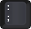
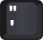
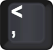
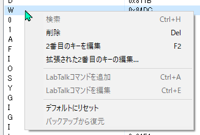
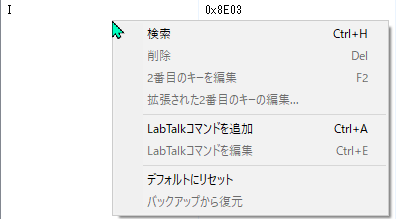

|
|
Origin の既存の CTRLショートカットキー は、キーボード上の数字や文字がすでにすべて使用されています。そこで、より多くのショートカットをサポートするために、コードキーの組み合わせ が Origin 2025b から導入されました。
CTRL キーを押しながら 「\」(バックスラッシュ) を押すと、Origin は 次に押すキー（コードの2つ目） を待機します。ステータスバーに待機状態が表示され、メッセージボックスにあらかじめ定義されたコードキーの一覧が表示されます。その後、目的の2番目のキーを押すと、対応するアクションが実行されます。

2番目のキーの待機状態中にマウスクリックをすると、待機は終了します。
プレフィックスキーと2番目のキーはキーコードダイアログで変更できます。
キーコードダイアログを開くには
現在のショートカットに利用可能なウィンドウタイプを指定します。すべてのウィンドウタイプで利用できるメニュー項目を指定すると、コンテキストは自動的に Any になります。そうでない場合、コンテキストはアクティブなウィンドウタイプに設定されます。
既定のプレフィックスキーはバックスラッシュ「\」ですが、次のキーに変更できます。
| スラッシュ ( / ) |  |
バックスラッシュ ( \) | |
|---|---|---|---|
| Backspace |  |
キー1 (!) |  |
| セミコロン ( ; ) |  |
アポストロフィ ( ' ) |  |
| カンマ ( , ) |  |
ピリオド ( . ) |  |
|
このダイアログのほか、User Filesフォルダ内の KeyChords.ini ファイルを編集することでも変更可能です。 |
2番目のキーはキーボード上の任意のキーを指定できます（矢印キー、Enter、スペース、Delete などを含む）。Origin にはあらかじめ定義済みのキーが付属しており、それらはキーコードダイアログ のリストボックスで確認できます。
それらはすべて編集、削除でき、また新しいキーを追加することができます。
リスト項目または空白部分を右クリックすると、コンテキストメニューが表示されます。
| メニュー項目上 | 空白の領域上 |
|---|---|
 |
 |
| ハント | ショートカットを設定したい メニュー項目 または ツールバーボタン を選択します。
そのメニューのIDとアクションの説明がキーコードダイアログに表示されます。 Esc キーを押すとハントモードを終了します。 詳しくは、「新しいコードキーを追加する」を参照してください。 |
|---|---|
| 2番目のキーを詳細設定... | 二番目のキーの欄をダブルクリックするか、右クリックして拡張された2番目のキーの編集を選択すると、2番目のキーを選択ダイアログボックスが開きます。
ドロップダウンリストから2番目のキーを入力または選択します。 |
| LabTalkコマンドを追加 / LabTalkコマンドを編集 |
LabTalk コマンド にショートカットを追加できます。コマンドはアクション列に表示されます。複数のコマンドラインがある場合は、最初の行のみが表示されます。
LabTalk コマンドショートカットを右クリックし、LabTalkコマンドを編集を選択するとスクリプトを編集できます。 |
新しいキーコードを追加できます。詳細は以下のセクションを参照してください。